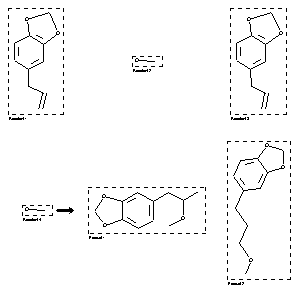

|  |
| FA | RX(1); FLST(1); RX(1) |
Reaction (1 of 1)
| Reaction ID | 8934885 |
| Reactant BRN | 136380; 1098229 |
| Reactant | 5-allyl-benzo[1,3]dioxole; methanol |
| Product BRN | 8976056; 155814 |
| Product | 5-(2-methoxy-propyl)-benzo[1,3]dioxole; 5-(3-methoxy-propyl)-benzo[1,3]dioxole |
| No. of Reaction Details | 1 |
Reaction Details (1 of 1)
| Reaction Classification | Multistage |
| Yield | 91 percent (BRN=8976056) |
| No. of Stages | 2 |
| Stage 1 | |
| Stage 2 | |
| Reagent | Hg(OAc)2; Na |
| Solvent | methanol |
| Temperature | 0; 0 |
| Citation Pointer | 6320927; Journal; Kaur, Navdeep; Dhillon, Ranjit S.; IJSBDB; Indian J.Chem.Sect.B; EN; 40; 4; 2001; 327 - 328; |
Reference (1 of 1)
| Citation Number | 6320927 |
| Document Type | Journal |
| Authors | Kaur, Navdeep; Dhillon, Ranjit S. |
| CODEN | IJSBDB |
| Journal Title | Indian J.Chem.Sect.B |
| Language Code | EN |
| (Series) Volume | 40 |
| Number | 4 |
| Publication Year | 2001 |
| Page | 327 - 328 |